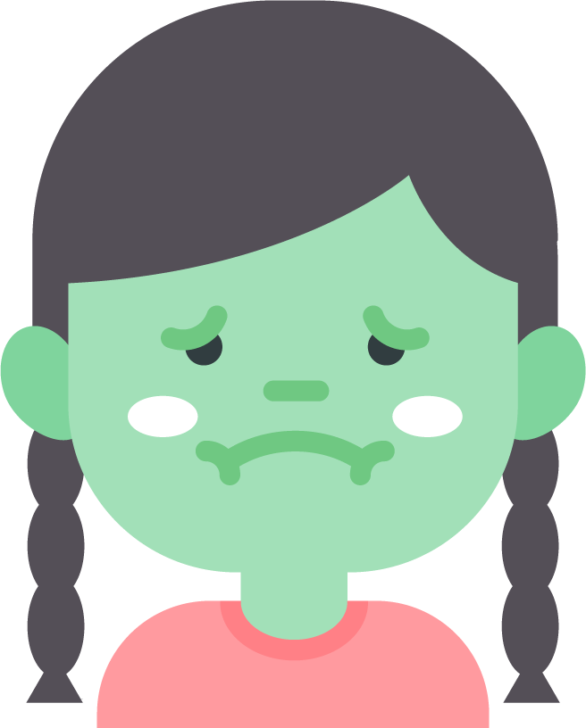
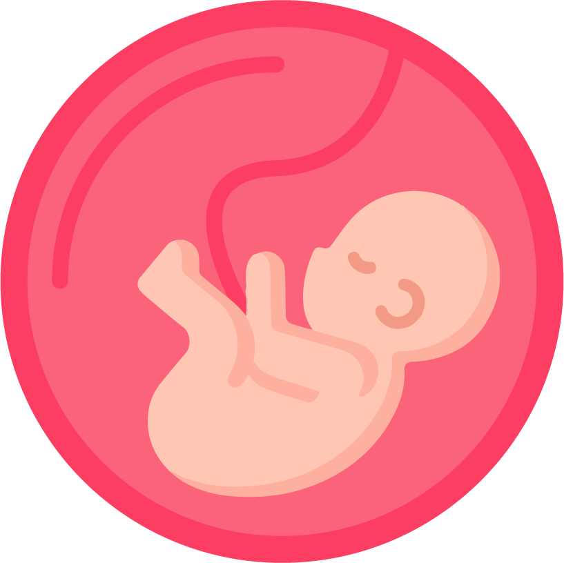
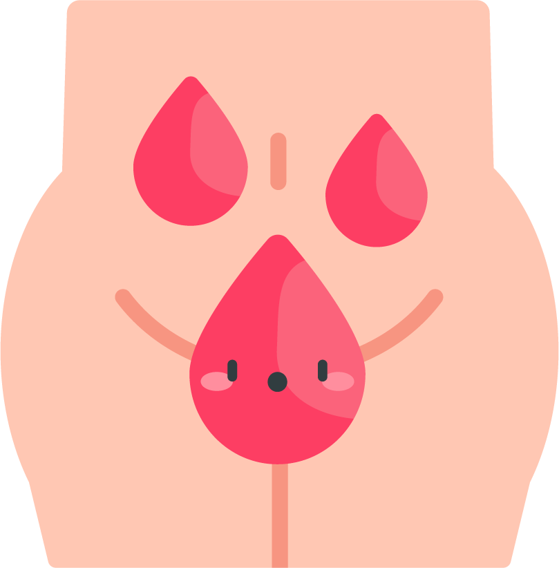
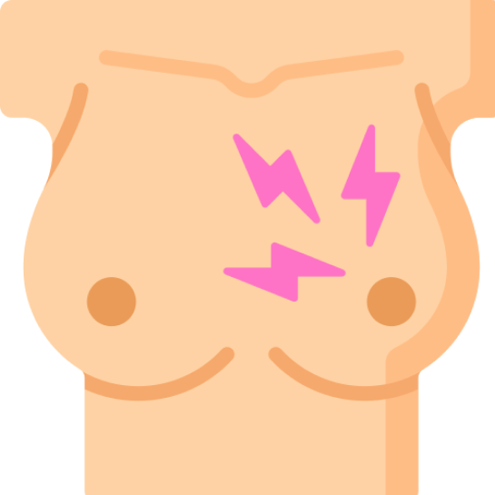

¿Sabes cuáles son los signos de alarma que ponen en peligro tu embarazo?
Informa inmediatamente a tu médico tratante si tienes:

Vómitos persistentes.

Si tu bebé no se mueve o lo hace menos de lo normal.

Pérdida de líquido o sangre por vía vaginal.
La maternidad es una etapa de gran ilusión, pero también de gran vulnerabilidad para la madre y el bebé.
Acude inmediatamente al establecimiento de salud más cercano, si presentas:
Sangrado abundante o con mal olor.
Desmayos o pérdida de la conciencia.

Dolor en las mamas.
No debe automedicarse.